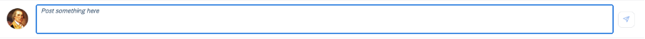

The sap.m.FeedInput control allows you to enter and send plain text. It
complements the sap.m.FeedListItem control to create a simple feed.
You can use the FeedInput control if you need to input small
amounts of text without formatting.

For more information, see the API Reference and the Sample.
Responsiveness
The feed input control can be used in small and large containers due to its responsive behavior.
Layout
The feeder (that is, feed input) is used to write plain text and (depending on the
context) to then create a note or feed entry by choosing the
Send pushbutton. The FeedInput control
provides the possibility to display a picture of the current user.
If the user image has not yet been set, a generic placeholder is shown. If the app does not support user images at all, the image can be omitted.
For more information, see the Sample.
Behavior
Initially, the feeder contains an input prompt, and the Send pushbutton is disabled. You can click into the input field to focus on it.
When the user starts to type, the input prompt disappears and the Send pushbutton is enabled and becomes more prominent.
If the available width is less than 25 rem (for example, portrait mode on a mobile phone), the picture is removed.
The sap.m.FeedInput control can be used in combination with the
sap.m.FeedListItem control as a feed or notes control. For more
information, see the Feed List Item control
documentation.